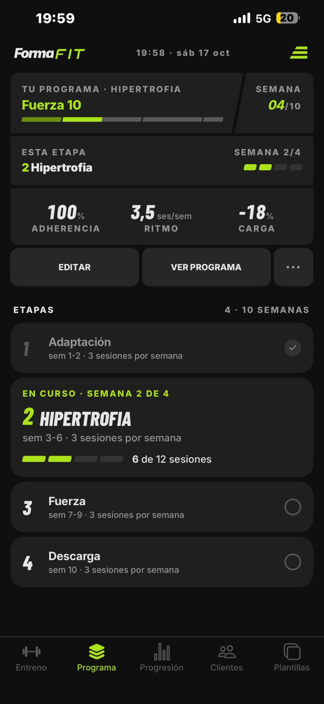
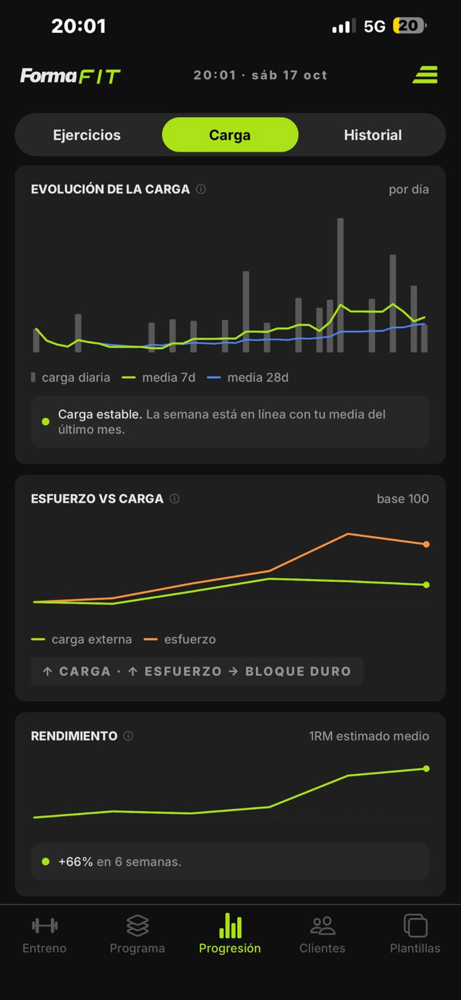
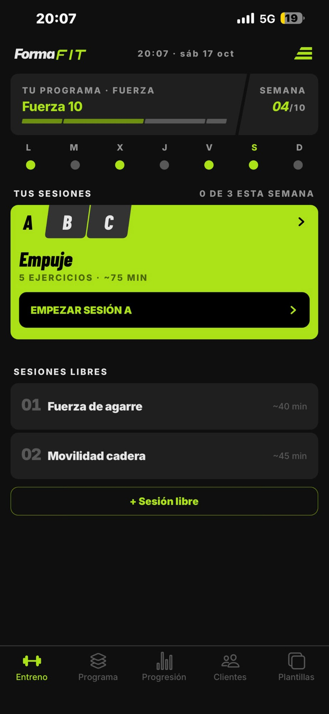

Programa por etapas
Divide tu programa en etapas: acumulación, intensificación, descarga…

Maqueta v3: mezcla de la web publicada y landing-flujo. Interruptor GRATIS/PRO como en la web (#pro en la URL): en PRO sale primero el camino del entrenador. El flujo va en horizontal; la página sigue en vertical. Textos de la web publicada salvo los pasos que no existían.
Gratis. Sin anuncios ni tonterías.
Para entrenadores/as.
Forma Fit es una app pensada para la gente que entrena. Crea o elige un programa, registra tus entrenos y mide tu progreso.
Pensada para que entrenes a tus clientes de la misma forma que entrenas tú, sin salir de la app.
¿Cómo entrenas? Elige tu caso y desliza.
Desliza para ver el siguiente paso
Divide tu programa en etapas: acumulación, intensificación, descarga…

Forma Fit mide tu entrenamiento, para que puedas tomar mejores decisiones.

Puedes crear y añadir tus propios ejercicios, como si fuesen de la app.
Para entrenamientos improvisados o fuera del programa, siempre a mano.

Crea un programa o una sesión una vez y asígnalo a quien quieras en dos toques.
Fuerza 3 díasPrograma · 4 etapas
ASIGNARHipertrofia PPLPrograma · 3 etapas
ASIGNARCore 20 minSesión
ASIGNARTu vida, tu ritmo. Sin notificaciones con una carita triste para que vuelvas.
Una nota antes de que la descargues
Forma Fit empezó porque yo mismo necesitaba una app para registrar mi entrenamiento y centrarme en eso: entrenar. Me molestaban las apps que pedían a cambio mi atención, mis datos o tener un anuncio acechando en algún lugar. Tampoco quería medallas ni trofeos por completar o no la sesión. Solo entrenar y llevar un registro de lo que había hecho.
Todavía tengo la primera versión instalada en el móvil, por nostalgia. Pero después de muchas (muuuchas) versiones, cambios e iteraciones, puedo decir que por fin cumple con lo que me propuse: una app fácil y cómoda de usar, pensada únicamente para las personas que entrenamos.
Estoy trabajando en nuevas ideas y mejoras (una vez que empiezas, nunca es suficiente), pero, ahora que ya no es solo mía, sino de todos, me gustaría saber qué piensas de la app, cómo puede mejorar para hacer tu entreno más cómodo y qué te gustaría ver en el futuro.
He invertido en ella tiempo y le he puesto todo el cuidado que he sabido. Si algo falla, recuerda que detrás hay una persona que solo quería entrenar y registrar sus marcas. Espero tu feedback constructivo para poder mejorarla.
Ojalá disfrutes usándola tanto como yo creándola.
LucasSin anuncios y sin tonterías. Y si entrenas a otros, prueba Pro con hasta 3 clientes.